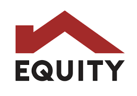
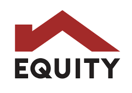

What I Do that interests me.
I specialize in installing, servicing, selling, and designing medical equipment and systems, leveraging technical expertise, regulatory compliance, and strong communication to optimize healthcare solutions. Discover how I can help you.

Medical Equipment Insatallation and user trainings.
Technical expertise in equipment calibration and troubleshooting, combined with project management and communication skills, has been developed through medical equipment installation. Knowledge of safety standards and collaboration with healthcare teams has been honed in this role.
Medical equipment service and repair
I have mastered diagnosing and repairing medical equipment while ensuring regulatory compliance and maintenance. My problem-solving and communication skills are refined through healthcare collaboration and efficient service scheduling.

Medical Equipment sales
I have honed expertise in promoting and selling medical equipment, leveraging in-depth product knowledge and customer needs analysis. My strong communication and negotiation skills are refined through building client relationships and closing deals effectively.
Innovator for medical systems
I have developed expertise in designing and implementing medical systems, ensuring seamless integration and operational efficiency. My skills in problem-solving and collaboration with healthcare teams are refined through managing system deployments and ensuring compliance with industry standards with profeciency in python and c++.
 
